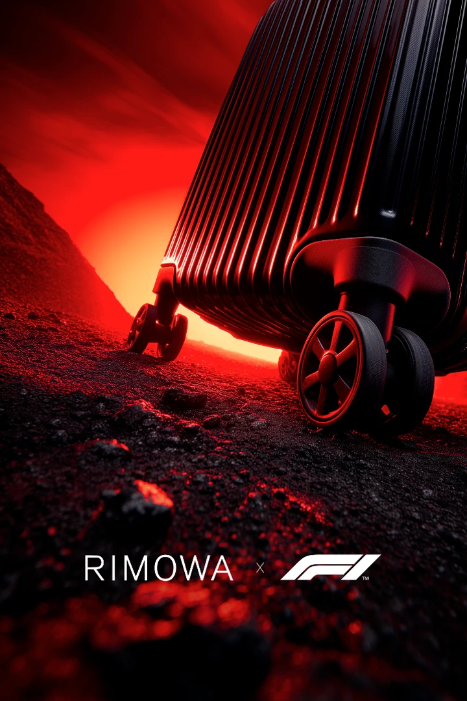
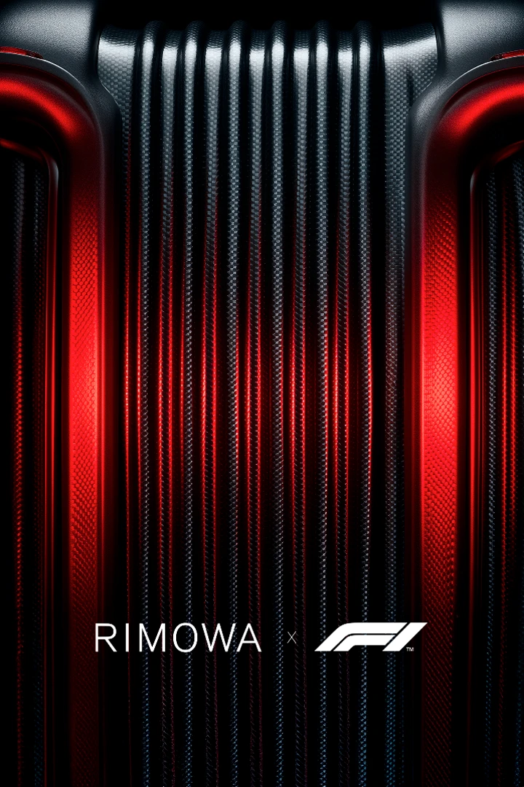
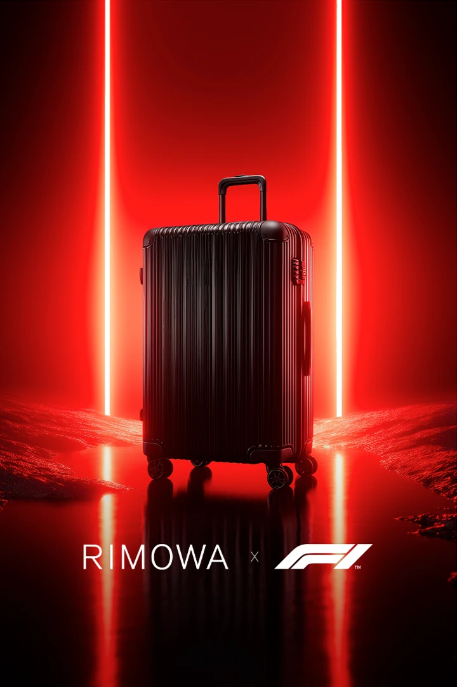
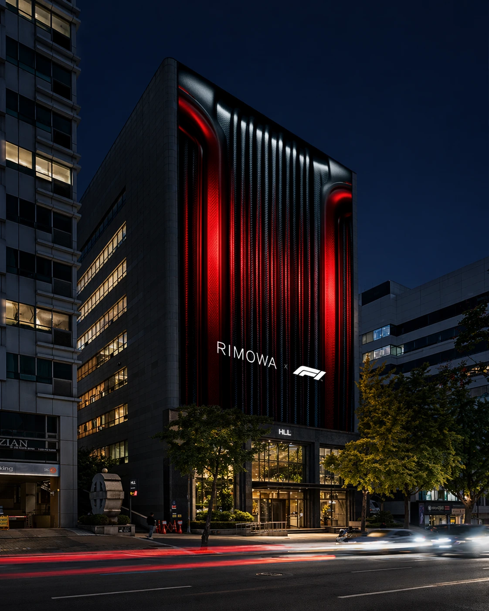
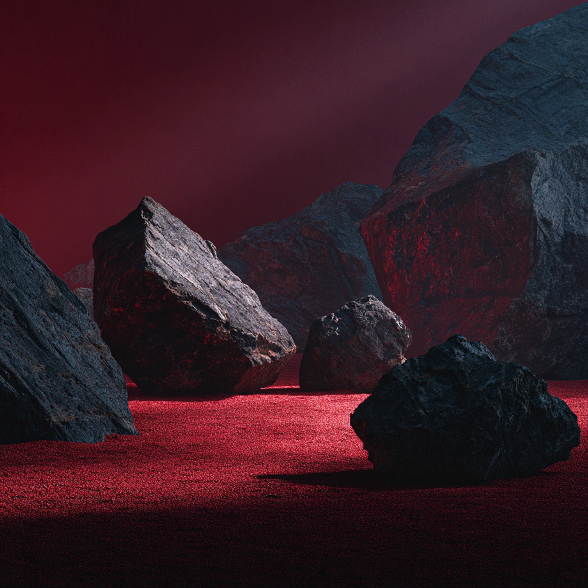
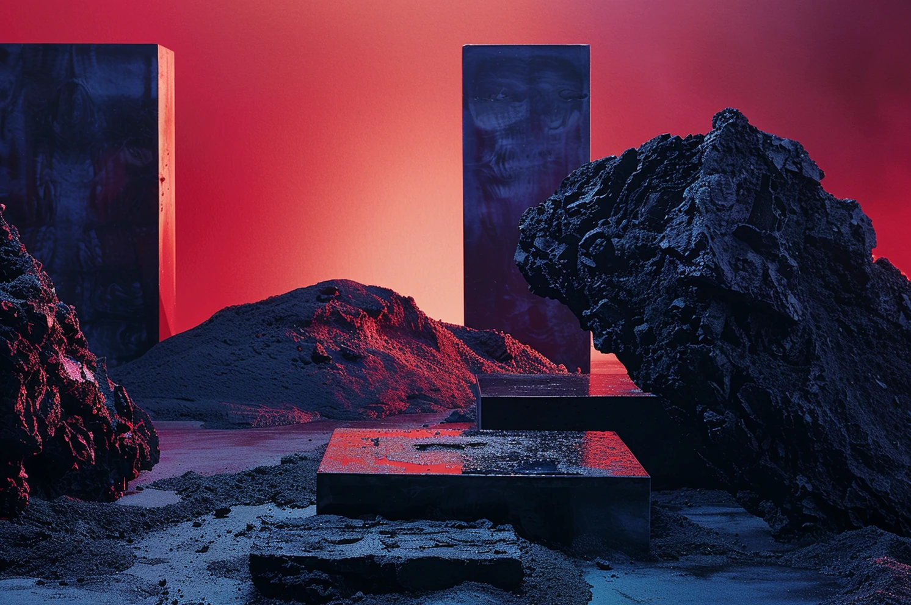
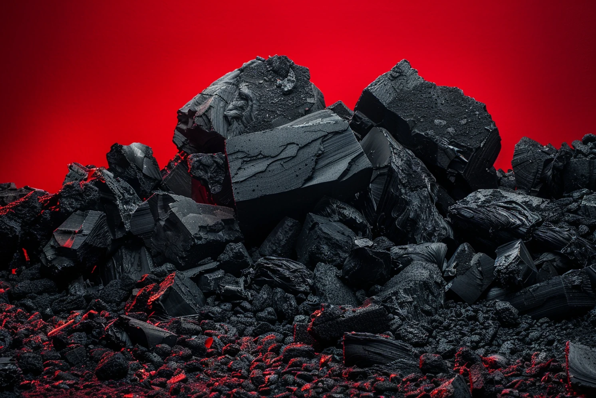
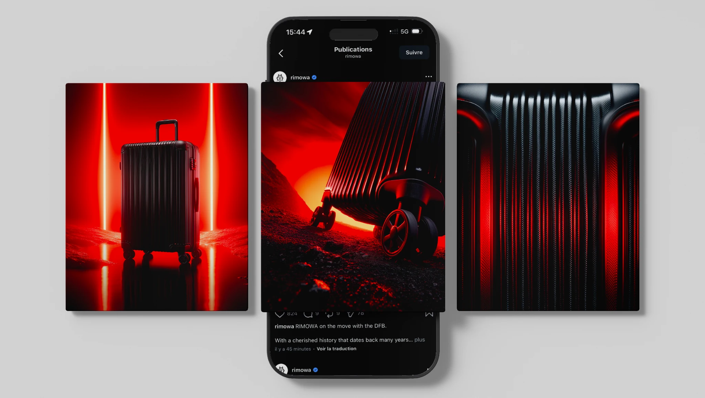
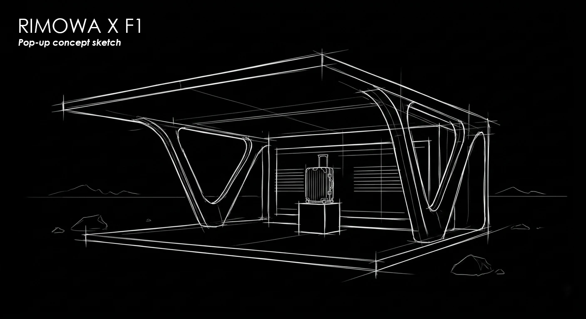
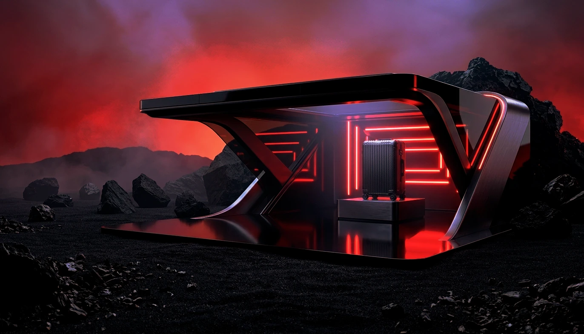

Rimowa x F1
Direction artistique · IA · Print · Digital · Motion · Shooting
ClientRimowa
Ce projet imagine une collaboration fictive pensée comme une rencontre hors de l’ordinaire pour Rimowa. La Formule 1 a été choisie comme territoire d’expression afin de confronter l’élégance de la marque à un univers de précision, de performance et de désirabilité. L’ensemble se construit autour d’un contraste fort entre noirs profonds, lueurs rouges et matières minérales, pour traduire une idée de vitesse maîtrisée.
L’ensemble réunit animation produit, key visuals, affichage, publications Instagram et concept pop up. Chaque élément prolonge la même direction artistique afin de faire exister une collaboration cohérente, immersive et premium.









